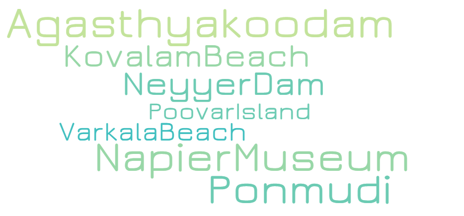

Thiruananthapuram ,the jewel in the emerald necklace that Kerala is for the Indian sub-continent, must surely have Parasuramanbeen a “must see” destination for ages, long before National Geographic Traveller classified it as one. Surely long before Sage Parasurama , according to local legend, threw his divine battle axe from Kanyakumari to Gokarnam to west Kerala, God’s own land, from the Varuna the sea god; before the times of Mahabali the democratic and just ruler of this wonderful land who was sent down to the netherworld through deceit. It doesnt take any flights of fancy to imagine that this land fired the imaginations of intrepid travellers and explorers like Columbus, Vasco da Gama, Marco Polo, Fa Hien, and quite possibly, countless others from the pages of history, recorded or not.

The origin of the Temple of Sree Padmanabhaswamy is lost in antiquity. It is not possible to determine with any exactitude, from any reliable historical documents or other sources as to when and by whom the original idol of Sree Padmanabhaswamy was consecrated

Thiruvananthapuram Museums & Zoo owe its orgin to the joint efforts of Mr. J.A. Brown, former Director of Thiruvananthapuram Observatory, and General Cullen, a former British Resident.
Kovalam is an internationally renowned beach with three adjacent crescent beaches. It has been a favourite haunt of tourists since the 1930s. A massive rocky promontory on the beach has created a beautiful bay of calm waters ideal for sea bathing.

The Veli Tourist Village which lies where the Veli Lake meets the Arabian Sea provides for unique boating and picnicking opportunities. Visitors can hire pedal boats or paddleboats as per their convenience.

Neyyar dam is a gravity dam on the Neyyar River in Thiruvananthapuram district of Kerala, South India, located on the foot of the Western Ghats about 30 km from Thiruvananthapuram.